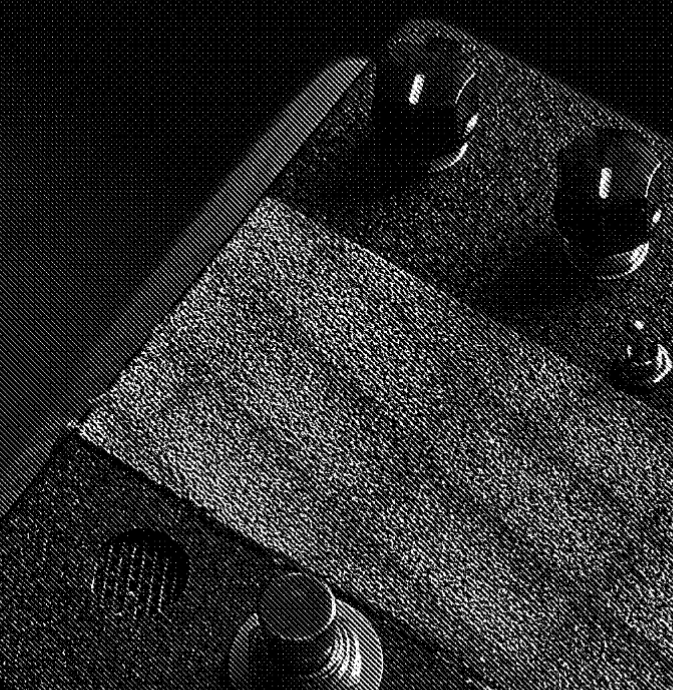
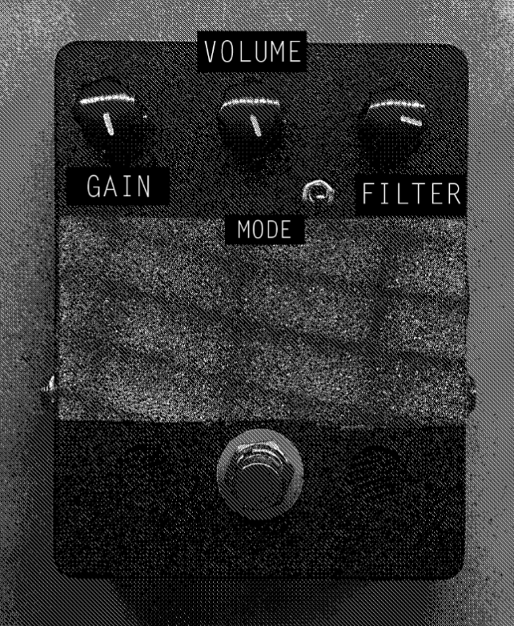

WL-002 - "LOTEK"
REFERENCE DOCUMENTATION

SUMMARY
Lotek is a two-stage distortion effect based on a popular circuit. A salvaged infrared LED is used instead of a normal LED or schottkey diode in the second clipping stage. The input is switchable between the input jack and a contact microphone inside the pedal enclosure, directly below a strip of 60 grit sandpaper.
SPECIFICATIONS
- 1590BB-style enclosure in “cast iron” finish
- true bypass 3PDT
- uses 9v CENTER NEGATIVE power supply, One-Spot or similar
- very loud
FUNCTIONS

-
GAIN
Overall gain of transistor distortion. Higher values are very “Velcro-y”
-
VOLUME
Main output volume. Surprisingly uncomplicated.
-
FILTER
Passive low-pass filter, good for taming the contact mic's output at higher gain.
-
MODE
Switch to toggle between input jack audio source or contact mic audio source
TIPS / TRICKS
-
At higher gain, the contact mic can produce microphonic feedback. This can be sort of controlled with the sandpaper.
-
The sandpaper works best with harsh objects, try: flat files, screwdrivers, screws, nails, barbed wire, etc. Note that it'll probably dull the tool but it'll be worth it!
-
The volume control on guitars is helpful for getting more subdued overdrive sounds. That's not exactly what the Lotek is made for, however.
CONTACT + SUPPORT
Please do not hesitate to reach out to us with questions, comments, repair requests, returns, parables, assembly opcodes, and general support. You can reach us via:
EMAIL – wildfirelaboratories@gmail.com
INSTAGRAM – instagram.com/wildfire_laboratories
WEBSITE – wildfirelaboratories.com
WARRANTY INFO
All Wildfire Laboratories devices have a 5-month warranty from time of
purchase. This covers manufacturing + assembly issues. Incorrect power
connections (power supplies with wrong polarity, too much power, etc), wear
and tear from normal use, and issues due to modifications are not covered by
said Warranty (although you should absolutely email us with any mods you
do).
We will repair, replace, or refund depending on the circumstances. Shipping will be paid by the buyer.